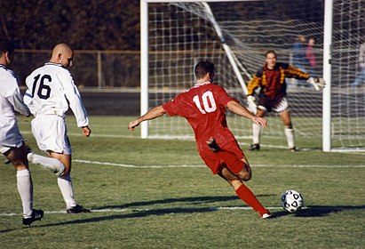

Футбол
Футбо́л — командный вид спорта, в котором целью является забить мяч в ворота соперника ногами или другими частями тела (кроме рук) большее количество раз, чем команда соперника. В настоящее время самый популярный и массовый вид спорта в мире. Игрок, играющий в эту игру — футболи́ст. Футбо́л — командный вид спорта, в котором целью является забить мяч в ворота соперника ногами или другими частями тела (кроме рук) большее количество раз, чем команда соперника. В настоящее время самый популярный и массовый вид спорта в мире. Игрок, играющий в эту игру — футболи́ст. Футбо́л — командный вид спорта, в котором целью является забить мяч в ворота